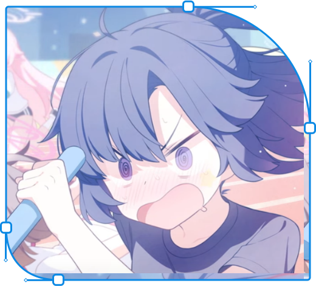
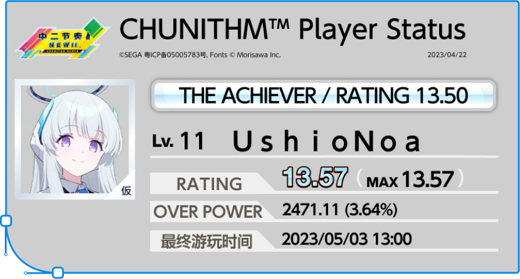
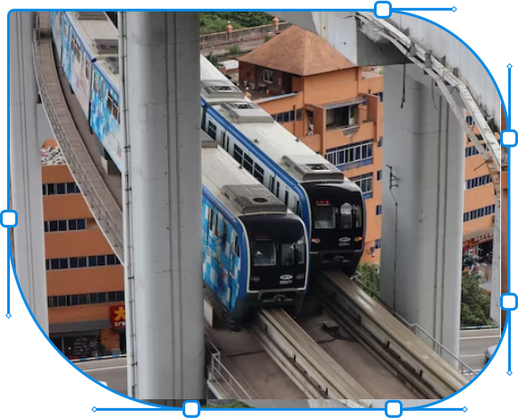
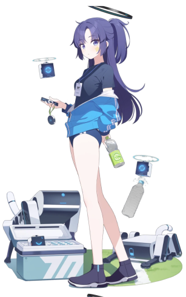
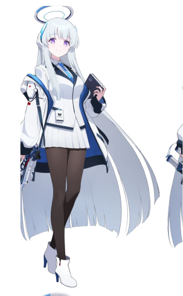
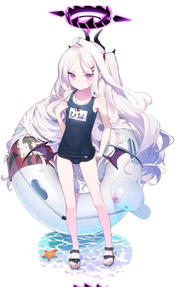

Hi.
I currently irregularly make fan content of BlueArchive, and other random projects I found interesting.

I also play a bunch of rhythm games, including CHUNITHM, WACCA, Project Sekai, Muse Dash and maimai (not really).

My Waifus from BlueArchive
I’m interested in public transit systems too, especially the monorail trains in Osaka and Chongqing.
Here’s a picture I took and uploaded to Unsplash.


